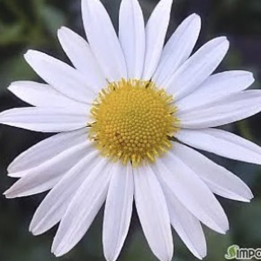

더이음문화예술교육협동조합 대표
노년의 삶의 질을 높이는 예술 활동, 지역사회 돌봄 혁신, 평생교육과 청소년 창업교육을 연결하는 프로그램을 설계합니다.
Digital Profile · The Ieum Arts Education Cooperative
더이음문화예술교육(협) 대표
예술교육기획자 · 시니어예술케어전문가
예술과 돌봄을 연결하여 건강한 노년과 지속가능한 지역사회를 디자인합니다.

Profile
전국을 활동 지역으로 시니어 예술케어, 문화예술교육, 사회적경제 기반 돌봄서비스와 교육 콘텐츠를 기획하고 운영합니다.
노년의 삶의 질을 높이는 예술 활동, 지역사회 돌봄 혁신, 평생교육과 청소년 창업교육을 연결하는 프로그램을 설계합니다.
Expertise
각 항목을 누르면 세부 내용을 확인할 수 있습니다.
더이음문화예술교육협동조합 대표
풍경마을문화예술교육 대표
청소년지도사 2급, 사회복지사 2급, 시니어예술케어전문가
문화예술경영 및 문화예술교육 기획·운영
Services
현장 교육과 콘텐츠, 자격과정, 컨설팅을 함께 제공합니다.
시니어 문화·인지활동 워크북
예술 기반 돌봄 프로그램 운영자 양성
돌봄 현장 이해와 실무 역량 교육
돌봄 종사자를 위한 문화예술 기반 역량 강화
노년의 관계, 표현, 회복을 돕는 참여형 교육
지역 기반 사업 기획과 운영 모델 컨설팅
Contact
시니어 예술케어와 문화예술교육, 사회적경제 기반 사업을 함께 논의해요.
Together